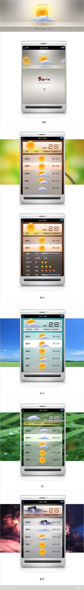

一款基于Android系统的天气服务软件，将传统的天气元素做了系统化的再设计，用户关心天气的目的在于其之后展开的行为，天气好与坏某种程度上直接影响着用户的行为，晴天，他们会出游，约会，运动等，雨天他们会宅家，出行打伞，添加衣物等，此软件能够给你提供详细的行动相关天气服务。
02.05.2011
一款基于Android系统的天气服务软件，将传统的天气元素做了系统化的再设计，用户关心天气的目的在于其之后展开的行为，天气好与坏某种程度上直接影响着用户的行为，晴天，他们会出游，约会，运动等，雨天他们会宅家，出行打伞，添加衣物等，此软件能够给你提供详细的行动相关天气服务。
